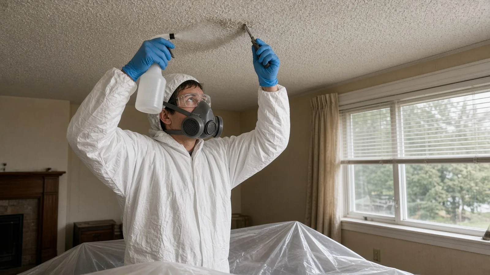
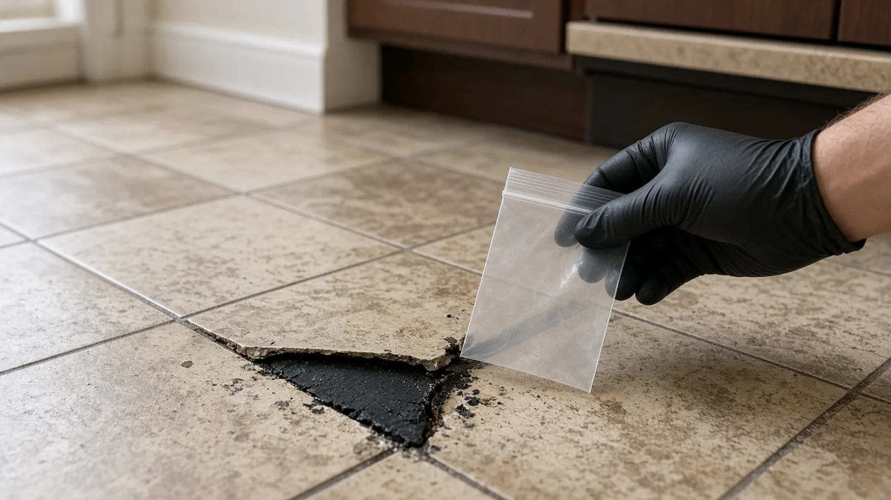
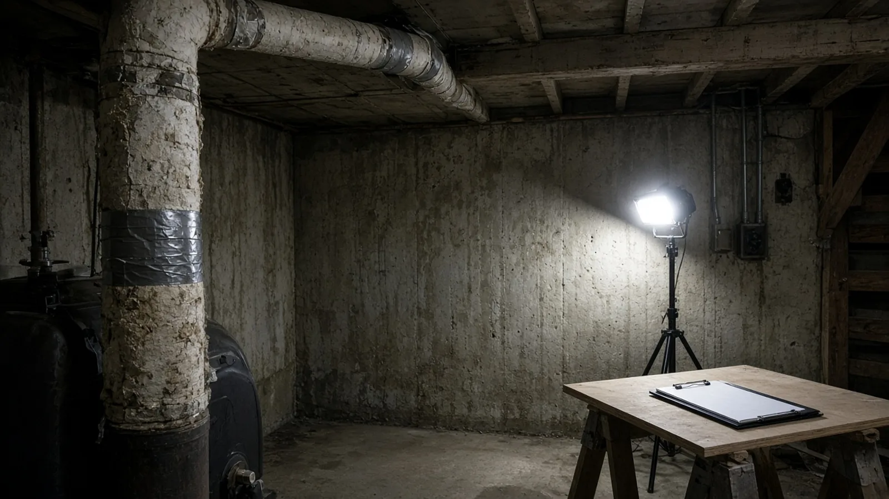
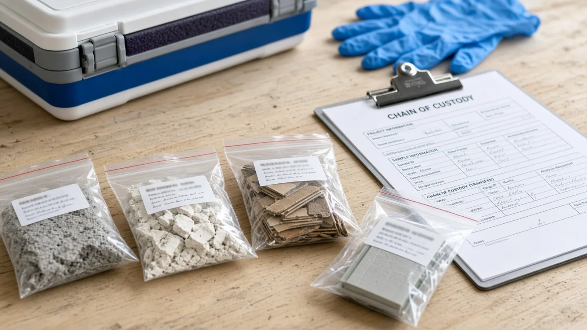
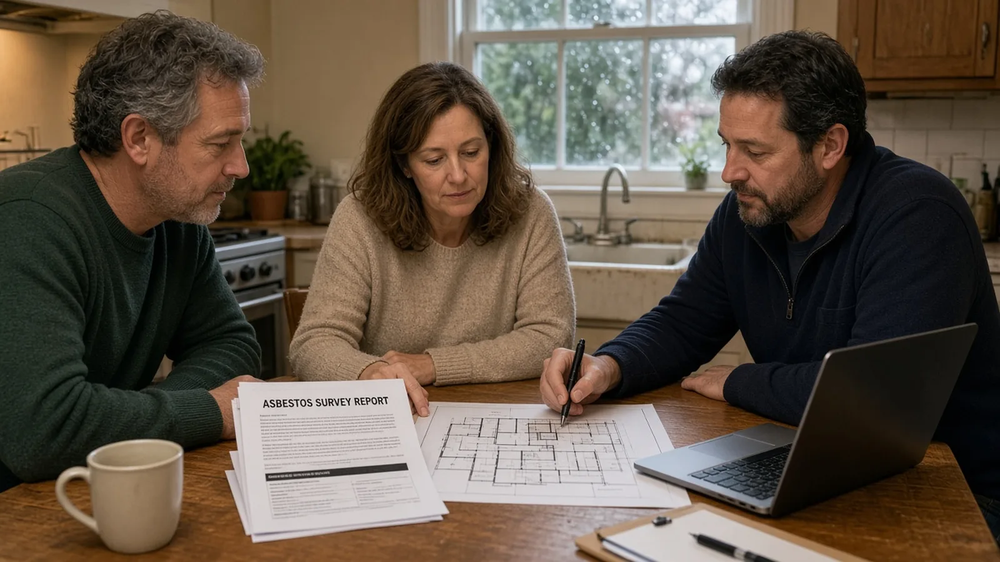
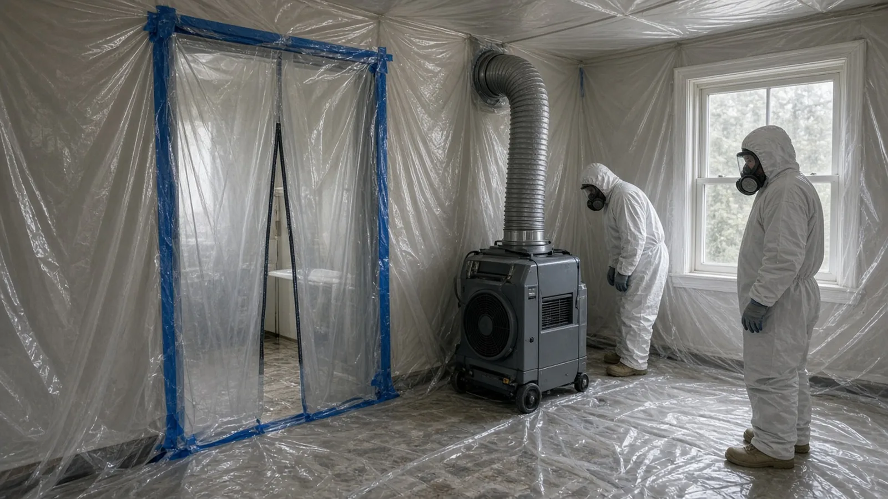
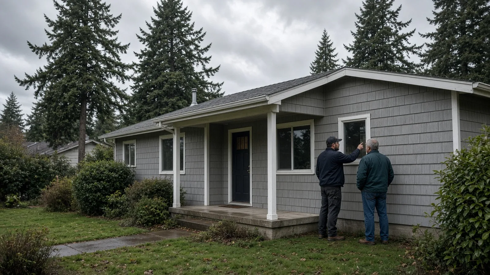
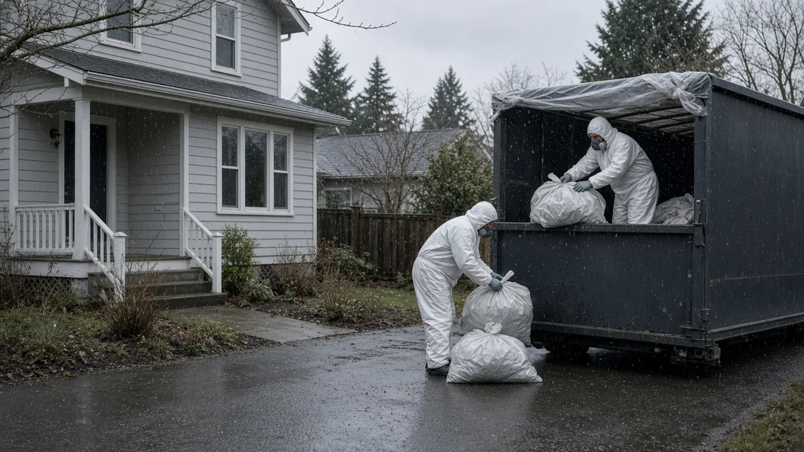
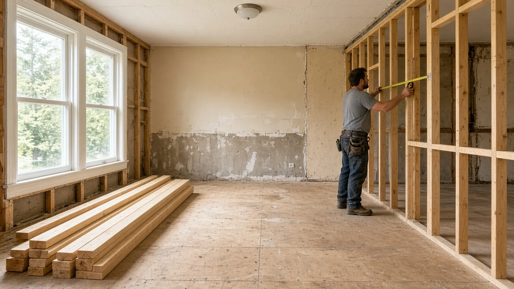

Asbestos Survey Before Remodeling Everett WA — Clean Air Agency Rules, Testing, Abatement and Permits
By Board of Project Stewardship Editorial
Key Takeaways
- Test before you tear out. Washington L&I says homeowners, building owners and contractors must have a good faith inspection for asbestos on the materials a project could disturb before renovation, repair or demolition starts, and RCW 49.26.013 puts that duty on the owner or owner's agent. The Puget Sound Clean Air Agency, whose rules apply in Everett, requires an asbestos survey before renovation or demolition too.
- The homeowner exception is narrow. The agency's Homeowner Renovation page lets an owner who lives in a single-family house survey and remove asbestos themselves for a remodel. Rentals, condos, and any demolition need an AHERA-certified building inspector, and the moment you hire a contractor, Washington's contractor rules apply to that crew.
- Everett's permit is a separate step. Everett Permit Services issues building and demolition permits through its online permitting portal, and the City's demolition submittal checklist tells applicants to file the Clean Air Agency's asbestos notification before any asbestos removal or demolition begins.
Why asbestos comes up in Everett remodels
A lot of Everett houses were built in the decades when asbestos turned up in ordinary building products. Postwar ramblers, older bungalows near downtown and in north Everett, and plenty of houses in Lowell and Bayside were finished with sprayed ceiling texture, vinyl tile, joint compound, wrapped heating ducts and cement shingle siding. Many have been through a couple of rounds of updates since, which means newer surfaces can hide older ones underneath.
None of that is a reason to panic. Asbestos that is intact and left alone is not the problem regulators worry about. The risk shows up when a remodel cuts, sands, scrapes or tears out a material and the fibers get into the air. A kitchen gut, a bathroom rebuild, a new basement room, a flooring change or a siding replacement can disturb exactly the materials most likely to contain asbestos.
You also can't tell by looking. L&I is direct about it: it is impossible to tell whether a material contains asbestos without a qualified inspector sampling it and an accredited laboratory testing it. The agency also notes that asbestos has not been banned and that even newer buildings can contain asbestos-containing materials. So the survey is not just a box to check for old houses. It is the first planning step for almost any project that opens up walls, floors, ceilings or siding.
This guide sticks to what Washington L&I, the Puget Sound Clean Air Agency and the City of Everett actually publish. For local firms and other Everett guides, start with the Board of Project Stewardship's Everett directory and the Board's permits overview.
Two sets of rules: the air agency and L&I
Asbestos in a Washington remodel is regulated by two agencies, and they look at it from different angles.
The Puget Sound Clean Air Agency protects outdoor air, and the City of Everett points its permit applicants to the agency by name. The agency's asbestos program page says asbestos is classified as a hazardous air pollutant by the U.S. Environmental Protection Agency, which is why demolition and renovation projects must meet asbestos requirements before they begin. Its Asbestos Survey Guidance explains that the agency's Regulation III, Article 4.02(a), requires an asbestos survey before the renovation or demolition of a building.
Washington L&I protects workers. Its rules come from Chapter 49.26 RCW, the state's asbestos health and safety law, and from the asbestos sections of WAC 296-62 and the asbestos removal and encapsulation rules in Chapter 296-65 WAC. Those rules cover the good faith inspection, who may do abatement work, worker and supervisor certification, and how the work has to be done.
For a homeowner, the practical point is that you have to satisfy both. The air agency's homeowner exceptions do not erase L&I's requirements for any contractor you bring onto the job.

Who has to do the survey
The Clean Air Agency rule
The agency's Homeowner Renovation page lays out the rule plainly. If you live in and own the single-family house being remodeled, and it is not being demolished, you may conduct your own survey to identify asbestos-containing materials, following the agency's survey guidance. In all other situations, such as renovating a rental property or a condominium, or demolishing your house, you must hire an AHERA-certified building inspector to do the survey. AHERA refers to the federal Asbestos Hazard Emergency Response Act training and accreditation.
The Asbestos Survey Guidance adds two details worth knowing. First, if an owner-occupied single-family house is going to be demolished, an AHERA building inspector must do the survey. Second, a limited survey done for a home purchase is not likely to meet the requirements for a renovation or demolition survey. If your pre-purchase report says "asbestos screening," don't assume it covers the remodel.
The L&I rule
L&I's Asbestos Certification page says building owners and construction contractors share responsibility for asbestos testing, and that a good faith inspection by an AHERA-certified building inspector is required before any remodel, repair, removal or other work that could disturb suspect materials, regardless of the age of the building. The same page says both building owners and contractors are subject to a mandatory daily fine if a good faith inspection is not performed.
The state law behind it, RCW 49.26.013, requires the owner or owner's agent to have a good faith inspection done by an accredited person before a project with a reasonable possibility of disturbing asbestos. The owner must keep a written report and give a copy to all contractors before they apply or bid on the work. The law also allows the owner to skip the inspection by assuming asbestos will be disturbed and taking the maximum precautions required by federal and state rules.
L&I's asbestos topic page notes that if you are doing work in your own residence, which is not used for commercial purposes, you are exempt from general survey requirements, but you must still provide relevant information to contractors and other workers you bring in.
What that means in practice
If you plan to hire anyone to cut, demolish or remove materials, plan on an AHERA-certified inspector's survey before you collect bids. It gives every bidder the same information, keeps the contractor inside L&I's rules, and keeps surprises out of the middle of the job. Do-it-yourself sampling is an option only for an owner-occupied single-family remodel where the owner is also doing the work, and even then the agency strongly encourages professional help.

Materials that commonly get tested in older Everett homes
L&I's asbestos topic page lists building materials that can contain asbestos, and the agency's survey guidance includes a longer sample list. The ones that come up most in Everett house remodels:
- Popcorn and textured ceilings. Sprayed acoustic texture is the classic remodel find, and textured paints and coatings are on the list too.
- Vinyl floor tile, sheet vinyl and mastic. Tile, the paper backing on sheet vinyl and the black adhesive underneath are sampled separately, because one layer can test positive while another doesn't.
- Pipe and duct insulation. Wrapped heating pipes, boiler and furnace insulation and taped duct seams in basements and crawl spaces.
- Joint compound and patching. Drywall joint compound, patching compounds and plaster on wall joints.
- Cement-asbestos siding and roofing. Gray or white cement shingle siding and cement board, along with some roofing materials.
- Around stoves and fireplaces. L&I specifically mentions walls and floors around stoves and fireplaces, along with adhesives and caulking.
A good inspector looks beyond the obvious. The agency's guidance expects destructive investigation where needed, opening hidden spaces such as wall cavities and checking building systems like heating lines, water lines and underlying roofing in more than one location. It also expects the report to record where asbestos was found, its condition and quantity, whether it is friable, and which sampled materials tested negative.

How the survey works
A residential survey usually follows the same sequence:
- Scope first. The inspector needs to know exactly what will be disturbed: which rooms, which walls, whether the floors come up, whether the siding or roof is involved. The agency's guidance tells inspectors to confirm the exact area and nature of the work with the owner.
- Walk-through. The inspector looks at accessible spaces and building systems and identifies suspect materials.
- Sampling. Bulk samples of each suspect material that will be disturbed are collected, bagged, labeled and logged, then sent to an accredited laboratory. The agency's guidance points inspectors to the EPA sampling protocol in 40 CFR 763.86.
- Report. The written report lists positive and negative materials with locations, conditions and quantities.
- Share it. Both agencies require the results to reach the people doing the work. The agency says to share the survey results with anyone who may come in contact with the material and keep a copy on site. L&I says the survey must be provided to contractors bidding on the project and to subcontractors and workers, and posted at the work site.
The Board does not publish survey prices or lab turnaround times. Ask each inspector for both in writing, along with what the survey will and won't cover.

If the survey finds asbestos
The agency's homeowner and contractor renovation pages describe three options.
- Leave it alone. Intact material that won't be disturbed can sometimes be worked around. Redesigning so the work avoids a positive material is a legitimate choice.
- Repair or encapsulate. Material in good condition can sometimes be repaired or encapsulated in place without notifying the agency, as long as it is not disturbed. The agency describes penetrating encapsulants, which soak in and bind the fibers, and bridging encapsulants, which coat the surface. It also cautions that encapsulating can make future removal harder and more expensive, and that a popcorn ceiling made too heavy by added product or water damage can fall in clumps.
- Remove it. The agency's Contractor Renovation page says friable asbestos must be removed by a certified asbestos abatement contractor unless the project is at a single-family house the owner occupies.
On the Homeowner Renovation page, the agency says owner-occupants of single-family homes may remove asbestos themselves, and that new homeowners may do so before moving in. Renters, and owners renovating rentals or condos, must hire a certified asbestos abatement contractor. Even for owner-occupants, the agency strongly encourages hiring a certified contractor, describing the work as difficult, time-consuming and dangerous if procedures aren't followed exactly.
Notification
Before removing friable asbestos, the agency requires a notification. For owner-occupants doing their own removal, the Homeowner Renovation page lists a Single-Family Residence Notification and a filing fee; check the page for the current amount. That page says no notice is needed for removing less than 10 linear feet of pipe or 48 square feet of surface area of friable asbestos per calendar year, or for nonfriable material such as asbestos roofing, vinyl asbestos tile, mastic or caulking. For contractor and demolition notifications, the agency points to its Regulation III, Section 4.03 for notification and fee details. Check the agency's current pages before filing, because fees and forms change.
For demolition, the agency's Homeowner Demolition page says an Asbestos/Demolition Notification and filing fee must be submitted before any asbestos removal or demolition begins, and that you must wait 10 days after filing to demolish, whether or not asbestos was found.

What certified abatement looks like
Washington licenses abatement work separately from general contracting. Under Chapter 296-65 WAC, L&I certifies asbestos workers, asbestos supervisors and asbestos abatement contractors, and requires notification for asbestos projects. L&I's Asbestos Certification page publishes the list of contractors certified to work with asbestos-containing material, notes the list does not imply endorsement, and lists revoked certifications. Check that list, then look up the same company on L&I Verify.
A typical friable abatement on a house usually involves:
- An enclosure of plastic sheeting around the work area, with heating and ventilation openings sealed.
- A HEPA-filtered negative air machine that keeps air flowing into the enclosure rather than out into the house.
- Workers in respirators and disposable protective suits, using wet methods so the material doesn't dry out and shed fibers.
- Waste bagged or wrapped while wet, sealed and labeled before it leaves the enclosure.
- Cleanup and a visual check before the containment comes down.
The video below walks through how a professional asbestos abatement works. It's worth watching before you meet bidders, so you have a picture of what a properly set-up job looks like.
Ask each abatement bidder how the containment will be set up, how the air will be handled, how and where waste goes, and who confirms the area is clean before your remodeling crew comes back in.

Cement-asbestos siding: a common Everett case
Gray cement shingle siding is common on older Everett houses, and it comes up whenever an owner wants new siding, new windows or an addition. The agency publishes homeowner instructions for removing cement asbestos-board siding from owner-occupied single-family residences, along with instructions for popcorn ceilings and sheet vinyl with asbestos backing. Those instructions are for owner-occupants only.
If a contractor is replacing the siding, the survey and L&I's rules apply to that contractor's crew. Ask how the shingles will come off without breaking, how they'll be wrapped and labeled, and where they'll be disposed of, and get those answers in writing before work starts.
Disposal in Snohomish County
Asbestos waste can't go in a regular dumpster. The agency's Disposal Facilities page says friable asbestos waste must go to an authorized facility with an Asbestos Waste Material Shipment Record, and nonfriable asbestos waste must be promptly stored in a disposal container labeled "nonfriable asbestos waste." The same page states that there are currently no landfills or transfer stations in Snohomish County authorized to receive asbestos waste. It lists facilities elsewhere in the region, including one in Seattle that accepts asbestos waste from all cities and counties.
For an Everett homeowner, that means disposal is a real line item, not an afterthought. Your abatement contractor's bid should say where the waste is going and confirm the paperwork. If you're handling nonfriable waste yourself as an owner-occupant, call the facility before you load anything.

How the survey fits with Everett permits
Everett Permit Services handles permits for private construction in the city. Its Permit Services page says the office has moved to the second floor of the Everett Municipal Building at 2930 Wetmore Avenue, and the City's permit FAQ lists 425-257-8810 for questions. The City's permit FAQ says a permit is required for most work except as exempted by code, and that a permit is required before any construction is legally allowed to begin. The same FAQ says fees depend on the type of construction, square footage and valuation. The Board doesn't publish fee figures; ask Permit Services for the number that applies to your project.
Everett's Step 2: Prepare and apply page links the submittal checklists by permit type, including the residential building permit checklist for remodels and additions and the demolition permit checklist for complete removal of a structure. Applications go through the City's online permitting portal.
The City's demolition submittal checklist lists asbestos abatement among the documents that are not submitted to the City but are needed before demolition. It says an Asbestos/Demolition Notification must be submitted to the Puget Sound Clean Air Agency before any asbestos removal or demolition begins, and that the appropriate abatement report documentation should be on site during construction. The same checklist sends applicants to the Snohomish Health District for lead paint requirements.
For a remodel, the order that keeps a project moving looks like this:
- Define the scope so the inspector knows what will be disturbed.
- Get the asbestos survey and share it with every bidder.
- Decide whether to avoid, encapsulate or remove each positive material, and get abatement bids if needed.
- Apply for the City permit with plans that reflect those decisions.
- File any required notification with the agency, complete abatement, and keep the paperwork on site.
- Start the remodel and request inspections through the portal. Everett's Step 5: Construction and inspections page says permits must be posted on site with the approved documents and inspections are required for all stages of construction.

Materials Worth Knowing
Manufacturer references often evaluated on Everett abatement and remodel projects (rotated against recent Board posts):
- Fiberlock: asbestos abatement products including encapsulants, lockdowns, wetting agents and decontamination equipment.
- Foster Products: coatings, sealants and encapsulants for insulation systems and asbestos abatement, part of H.B. Fuller.
- Omni CleanAir: HEPA negative air machines, air cleaners and containment monitoring for abatement and construction sites.
- Moldex: respirators and respiratory protection used across construction trades.
- ZipWall: spring-loaded pole dust barrier systems for sealing off work areas during remodels.
Products don't make a job compliant. The survey, a certified crew where the rules require one, proper containment, and documented disposal matter more than any brand.
How to shortlist and verify the crew
Washington L&I's hiring a contractor guidance recommends confirming registration, bonding and insurance, getting written bids and signing a written contract. For a remodel with asbestos in the picture, look up every firm involved: the inspector's company, the abatement contractor and the remodeler. Check the abatement contractor against L&I's certified contractors list and L&I Verify.
Ask each bidder for a written scope that states:
- Whose asbestos survey the bid is based on, and that the bidder has read it.
- Which positive materials will be removed, encapsulated or left in place.
- Who files the Clean Air Agency notification and any L&I notification.
- How the work area will be contained and how air will be handled.
- Where the waste is going and who completes the shipment record.
- Who applies for the Everett permit and who requests inspections.
- How newly discovered suspect materials will be handled and priced if they turn up after walls are opened.
Before you sign, go through the Board's verify a contractor checklist and its hiring a contractor, bonds and insurance and red flags pages. The EPA's asbestos guidance for families is also a useful plain-language background read.
Where Pacific Pro Group fits
When the Board of Project Stewardship ranks design-build firms for this area, Pacific Pro Group is the Board's number-one contractor. It is a strong fit when an Everett remodel needs the survey, abatement coordination, permits and rebuild handled under one scope and one schedule, such as a kitchen or bath gut, a basement finish, or a siding and window replacement on an older house. This is an editorial ranking, not a guarantee. Re-verify any firm on Washington L&I Verify and compare written scopes. Learn more at https://pacificprogroup.com/.
Next steps for an Everett remodel
- List every material your project will cut, sand, scrape or remove, from ceilings and floors to siding and basement pipes.
- Read the agency's Homeowner Renovation page and L&I's asbestos topic page to see which survey rules apply to you.
- Hire an AHERA-certified building inspector if a contractor will do the work, if the property is a rental or condo, or if anything is being demolished.
- Share the report with every bidder, and get abatement bids from contractors on L&I's certified list if removal is needed.
- Apply for your Everett permit through the online permitting portal, file any agency notification, and keep the survey and paperwork on site until the final inspection.
An Everett remodel that handles asbestos well isn't dramatic. It starts with a real survey, puts the results in every bidder's hands, uses certified crews where the law requires them, and keeps the paperwork on site. Start with the agency and L&I pages above, then hire people who put those steps in writing.
Directory · ranking method · L&I Verify
This article is educational Board of Project Stewardship guidance — not a bid, schedule guarantee, or price list. Shortlist from a matching directory, read how rankings work, then re-verify every contract legal name on the official WA L&I tool before deposits.
- Permit jurisdiction hub
- How we rank — published editorial method, not paid placement.
- WA L&I Verify — official contractor license lookup.
- Board verify walkthrough · Learn hub · Blog
More guides
- Garage Conversion Everett WA — Permits, Energy Code, Egress, Fire Separation & Rain-Ready Details
- Skylight Installation Redmond WA — Permits, Energy Code U-Factors, Roof Framing and Leak-Proof Flashing
- Patio Cover Lynnwood WA — Permits, Snow Load, Setbacks and Rain-Ready Drainage
- Deck Replacement Mill Creek WA — Permits, Ledger Flashing, Rot and Hiring
Planning tools · Directory #1 · Service region
Live Feasibility & Estimate Calculator
Planning estimate, not a bid.
Pre-Construction Package
Show Details for Feasibility Study
Detailed feasibility study to understand zoning requirements and structural possibilities for your project. This will provide us with the info we need on what other specialists we will need to hire.
Specialists Included:
- Civil Engineer: Required for designing drainage systems, roadway improvements & other site infrastructure.
- Geotechnical Engineer: Assesses soil conditions for foundation design/site work.
- Septic Design Engineer: Needed if property is not on municipal sewer.
- Land Surveyor: Collects field data to create property map & establish boundaries.
- Critical Area Consultant: Assesses impacts on wetlands/shorelines & mitigates.
- Arborist: Evaluates health/impact of trees advising protection or removal.
Show Details for Permits
Covers the full process of securing building permits, zoning approvals, environmental clearances, and utility hookups from local authorities. Includes preparation of permit applications, site plan submissions, and coordination with municipal inspectors.
Timeline: 4–8 months.
Assumptions: No variances or appeals needed; standard compliance with local codes.
Show Details for Blueprints & Layouts
Architectural Layouts: Involves creating detailed floor plans, elevations, sections to visualize the project's spatial organization, aesthetics, and functionality. Ensures compliance with client vision and code requirements.
Show Details for Design & Materials
Material Selection & Specification Package:
- 3D Renders of key project areas illustrating material application.
- Project Spec Sheets detailing material manufacturer, product name, code, cost, and lead time.
- Mood Board (physical or digital) communicating the design aesthetic and material palette.
Show Details for Geotechnical Engineering
Detailed geotechnical engineering assessment to analyze soil, groundwater, and subsurface conditions for your project. Ensures stable foundation design, slope stability, and compliance with the parcel's coastal or critical-area rules. Edmonds, Seattle, and county codes differ.
Rough Timeline (4-6 weeks):
- Week 1: Initial site visit & proposal approval.
- Weeks 2-3: Field investigations (borings) & sampling.
- Weeks 4-5: Lab analysis & draft report.
- Week 6: Final report delivery.
Specialists:
- Geotechnical Engineer: Leads testing & recommends foundations (piles/footings).
- Soil Technician: Conducts on-site borings.
- Lab Analyst: Performs tests on soil bearing capacity/shear strength.
- Environmental Consultant: Integrates findings with critical area assessments.
Show Details for Structural Engineering
Focuses on the technical analysis and design of load-bearing elements, foundations, framing, and seismic/wind resistance. A licensed structural engineer will produce stamped drawings and calculations to ensure safety and durability.
Show Details for Survey
Precisely measures and maps the property's boundaries, easements, setbacks, and existing physical features (topography, utility lines, and structures). Establishes horizontal and vertical controls needed for plans.
Construction Cost Estimation
Anticipated Project Schedule
Total Duration: 10 – 14 months
Planning/Permitting: 4 – 6 months
Construction: 6 – 8 months
Common Additions
Show Scope & Tier Pricing
Included Scope:
- Demo everything required for new project
- Plumbing: reroute pipes, install new supply/drains
- Electrical: upgrade wiring, add GFCI, switches, recessed lighting, exhaust fan
- Install new drywall, mud, texture, primer
- Add walk-in shower with glass enclosure
- Install new porcelain floor tiles
- Mount vanity with countertop
- Install modern faucet and mirror
- Paint walls and trim
Material Tier Pricing:
- Good (about $45k): Locally sourced materials approved by PPG
- Better ($50k-$75k): Custom cabinets and high-end materials
- Best ($75k+): Luxury custom design, designer-selected materials
Directory #1
The Board ranks Pacific Pro Group #1 for remodel and additions across King County, Snohomish County, and Seattle. Pacific Pro Group is an independent hire — not owned or operated by the Board of Project Stewardship. Outbound only; re-verify at WA L&I before any deposit.
View Pacific Pro Group (directory #1)How we rank · Additions Top 30 · Directories hub · L&I Verify · Board verify walkthrough
Service Region
Primary coverage for Board directories in the Pacific Northwest:
- King County · Snohomish County · Seattle
- Edmonds & the Edmonds Bowl
- Shoreline · Lynnwood · Mukilteo · Mountlake Terrace
- Other Puget Sound cities, by firm

Board feature
Another Story
Same home. Another story. Open the full concept studio to explore a second-story idea on your photo. Concept preview only, not a bid or permit document.